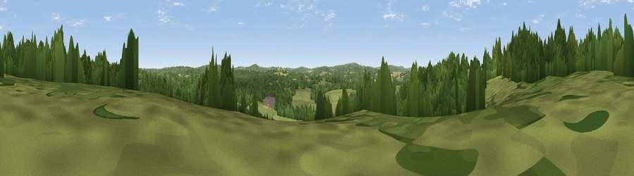

Viewpoint near Langton Green
#41918 in England · top 76% of its area beats it · near Langton GreenThe view, rendered

A 360° render of this exact spot computed from the terrain model, tree cover and land cover — summer colours, afternoon light, calibrated against photographs of famous viewpoints. Real trees, hedges and buildings will differ in detail.
The panorama
Grey silhouette: terrain skyline in each direction (720 bearings, Earth curvature and refraction included). Dashed green: skyline with trees (+15 m) and buildings (+8 m) as obstacles. Blue strip: how far the ground is visible on each bearing.
Where the view opens
Wedge length = distance to the farthest visible ground on that bearing (vegetation-aware). Rings at 10, 25 and 50 km.
What fills the view
51% grassland · 44% woodland · 4% cropland · 1% built-up
Angular shares of the visible panorama (visual magnitude), not map area. Landscape diversity 0.39 (0–1 Shannon).
Key numbers
More beautiful places nearby
The staircase of upgrades: each row has a higher view potential than everything closer. Driving times are estimates from straight-line distance, calibrated against real road routing — check an actual route before setting out.
| Place | Direction | Drive | Score |
|---|---|---|---|
| Viewpoint near Groombridge | W · 1 km | ~2 min | 34.6 |
| Viewpoint near Groombridge | SSW · 4 km | ~9 min | 42.2 |
| Viewpoint near Speldhurst | N · 4 km | ~10 min | 45.7 |
| Viewpoint near Town Row | SSE · 6 km | ~12 min | 49.7 |
| Viewpoint near Cowden | W · 6 km | ~12 min | 53.2 |
| Viewpoint near Bidborough | NNE · 6 km | ~13 min | 57.2 |
| Viewpoint near Upper Hartfield | SW · 9 km | ~18 min | 59.6 |
| Viewpoint near Sevenoaks Weald | N · 14 km | ~25 min | 62.3 |
51.12351, 0.19956 · source: screening · position refined by local search. Computed location — check access rights before visiting.